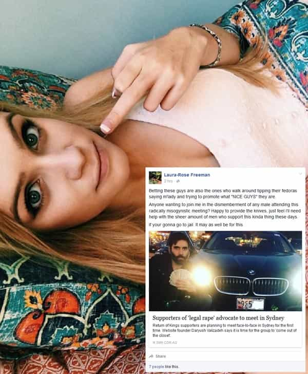

This teams [sic] goal is to (in a humane a way as possible) dismember or mutilate the genitals of the men who support this atrocious movement.
— Laura-Rose Freeman, principal organizer of the planned knife attack (archive) in Sydney, who read Phoebe Moloney’s article falsely saying that Sydney meet-up participants wanted to legalize rape.
Readers of Sydney Morning Herald journalist Phoebe Moloney openly planned to “dismember and mutilate” the genitals of Return Of Kings fans intending to meet at Hyde Park in Sydney. The ringleader, Laura-Rose Freeman, only quoted one article in her call to violence and it was Moloney’s. In this piece, Moloney lied that those meeting in Sydney wanted to legalize rape, despite providing no evidence to confirm this completely made-up claim. Worse still, this claim endangered people, whose motivations Moloney invented out of thin air and presented as violent.
What’s more is that fact-checking website Snopes conclusively debunked the outright fabrication that the meetings were either pro-rape events or that participants were supporting the legalization of rape. Again, the media, with Moloney at the absolute forefront, deliberately conflated the satirical article by Roosh with the desires of those wanting to come to Hyde Park, two other Sydney locations and venues across Australia. The onus is on Phoebe Moloney to prove her claim that Sydney and Australian attendees wanted to legalize sexual assault.
Shockingly, Laura-Rose Freeman offered to “provide the knives” and indicated she was willing to go to jail over “the dismemberment of any male attending”:

Was Moloney’s agenda to ignore violence against us from the start?
Phoebe Moloney didn’t even scroll down to the end of our first page, as she claimed we only publish 15 articles a month. So much for “research.”
Given Moloney’s known radical feminist positions, exemplified in her role as Women’s Officer at the University of Sydney, Return Of Kings can safely assume that she is willfully ignoring countless serious threats being made against those who had intended to meet up in Sydney and other Australian cities. This is in addition to other calls to incite violence across the world, ranging from acid attack proposals to firebombing establishments housing ROK functions.
It is also clear that Phoebe Moloney did not go past the first half of the first page of ROK. We can tell this because she ridiculously claimed that we publish “about 15 articles a month” (archive), not the real figure of around 100. Moloney’s ideological bias is so evident that she did not even bother to finish one page of our website, which would have easily disproven her abysmally shoddy effort at “research.”
Fairfax Media’s main switchboard transferred our call the Thursday morning before last Australian time so that we could confirm if Phoebe Moloney intended to publish details of the knife attack plan and other serious, specific threats. She responded by crying and asking if we could call her back in 10-15 minutes. She did not answer a subsequent call.
Laura-Rose Freeman’s knives plot
Those indicating they would attend a local Starbucks before going onto Hyde Park with knives were:
Many others were invited and a cross-section indicated they would be “interested” in attending.
Other threats made against innocent men thanks to malicious journalists and violent SJWs
Chloe Giesbrecht thinks that specific threats to beat people to within an inch of their life and throw acid on them are “funny.”
Chloe Giesbrecht (Twitter) of Winnipeg, Canada (coincidentally on the same day she was asking for advice about how to apply to be a prison/corrections officer):

Giesbrecht has a history of incidents involving Twitter and the police. Her ignorance is on show this instance because she did not bother to check if Roosh would be in Canada. These are the exact sorts of gullible, threat-prone people journalists around the world are aware of and will not report about.
Christie Orr was actually a contestant on The Amazing Race as “overweight comic relief”, even if she uses deceptive camera angles in photos, making it hard to see her as the same person:
And the irony of Alannah Watson claiming to “fight rape” by threatening mob rape and implied death herself:
ROK has documented many more very serious threats and calls to violence by SJWs and others. Hundreds more exist beyond this only partial list.
How about some balanced reporting?
If any ROK member threatened even the goldfish of someone, Phoebe Moloney and others would be on the scene in five seconds flat. There is no excuse for painting a false climate of harassment by ROK where none exists, especially when the only threats have come from violent individuals being protected from any scrutiny by journalists.
We expect either confirmation and proof from Phoebe Moloney that attendees in Sydney supported the legalization or an apology and unmitigated retraction of the claim.
And if journalists will not shed their ideological bias and publish the threats being made against us, we will ourselves.
Read More: All Public Rape Allegations Are False


{kind=link}
{kind=link}
{kind=link}
{kind=link}
{kind=link}
{kind=link}
{kind=link}
{kind=link}
{kind=link}
{kind=link}
{kind=link}
{kind=link}
{kind=link}
{kind=link}